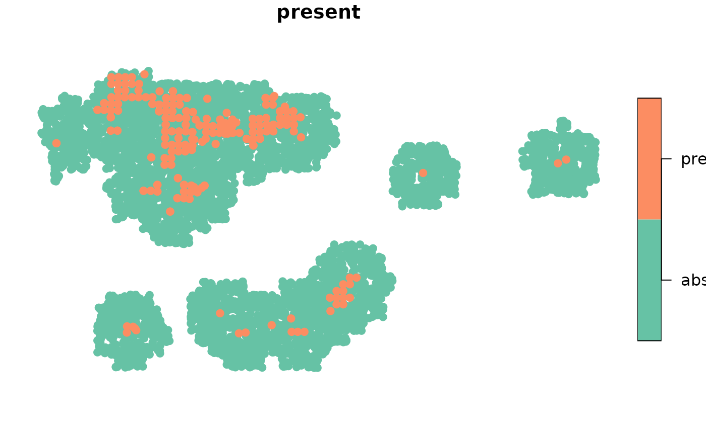
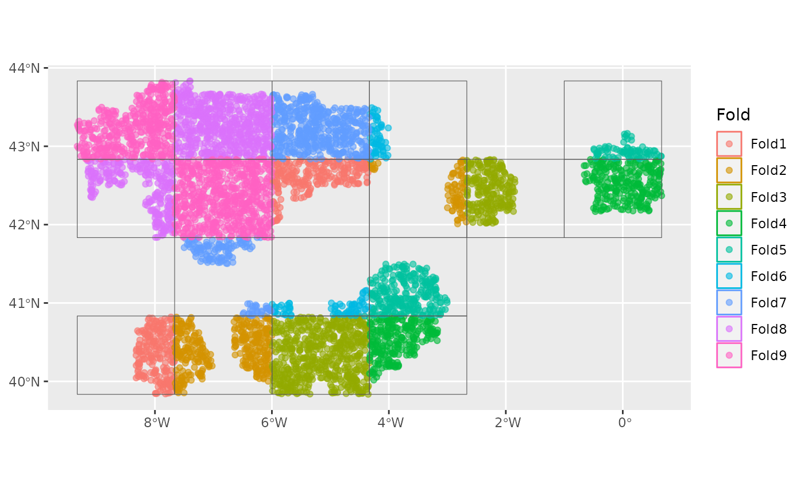
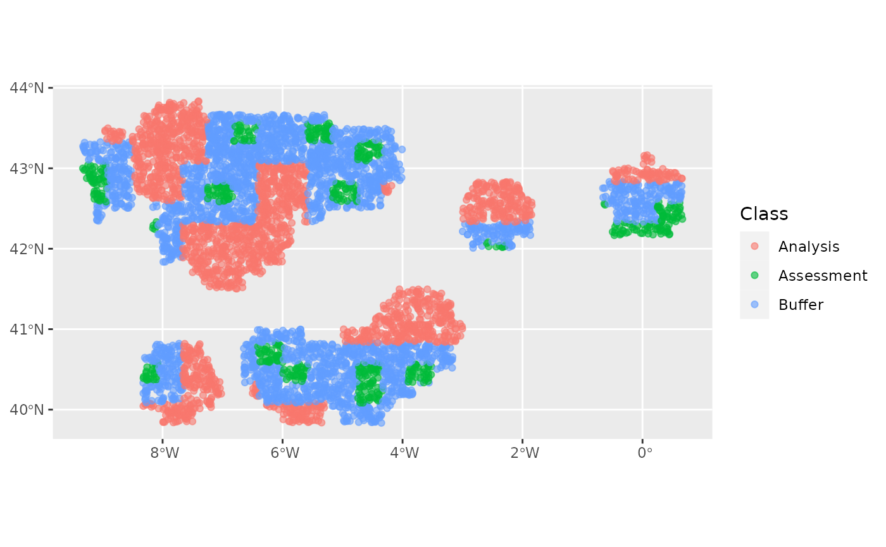
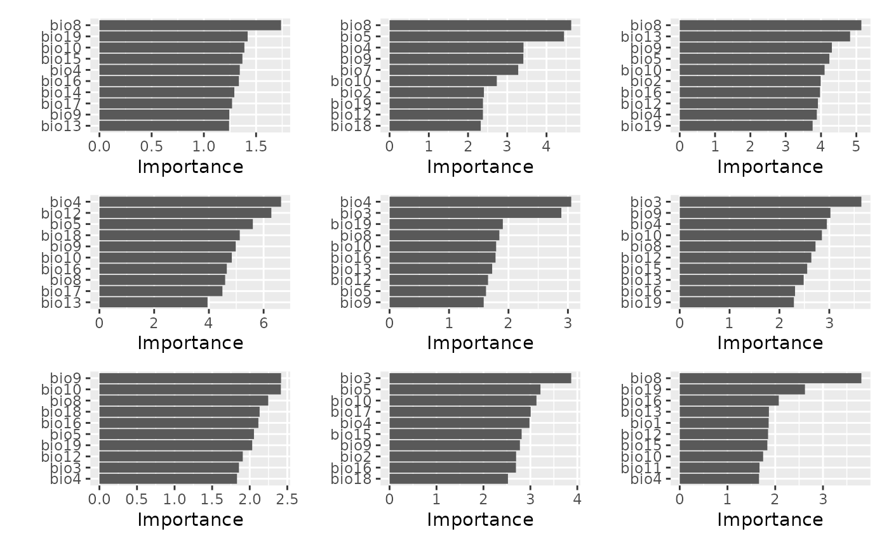

Getting Started with {tidysdm}
getting_started.Rmd
library(tidysdm)
#> Loading required package: parsnip
#> Loading required package: recipes
#> Loading required package: dplyr
#>
#> Attaching package: 'dplyr'
#> The following objects are masked from 'package:stats':
#>
#> filter, lag
#> The following objects are masked from 'package:base':
#>
#> intersect, setdiff, setequal, union
#>
#> Attaching package: 'recipes'
#> The following object is masked from 'package:stats':
#>
#> step
set.seed(112233)tidysdm is an offshoot of the ENMTools
package, and will eventually take over that package’s modelling
functions. tidysdm is a package to make it easy to fit
Species Distribution Models in a tidymodels framework. We
will use data from the ENMTools package to demonstrate how
tidysdm works.
library(ENMTools)
#> Loading required package: dismo
#> Loading required package: raster
#> Loading required package: sp
#>
#> Attaching package: 'raster'
#> The following object is masked from 'package:dplyr':
#>
#> select
library(tidyverse)
#> ── Attaching core tidyverse packages ──────────────────────── tidyverse 2.0.0 ──
#> ✔ forcats 1.0.0 ✔ readr 2.1.4
#> ✔ ggplot2 3.4.4 ✔ stringr 1.5.0
#> ✔ lubridate 1.9.3 ✔ tibble 3.2.1
#> ✔ purrr 1.0.2 ✔ tidyr 1.3.0
#> ── Conflicts ────────────────────────────────────────── tidyverse_conflicts() ──
#> ✖ tidyr::extract() masks raster::extract()
#> ✖ dplyr::filter() masks stats::filter()
#> ✖ stringr::fixed() masks recipes::fixed()
#> ✖ dplyr::lag() masks stats::lag()
#> ✖ raster::select() masks dplyr::select()
#> ℹ Use the conflicted package (<http://conflicted.r-lib.org/>) to force all conflicts to become errors
library(tidymodels)
#> ── Attaching packages ────────────────────────────────────── tidymodels 1.1.1 ──
#> ✔ broom 1.0.5 ✔ tune 1.1.2
#> ✔ dials 1.2.0 ✔ workflows 1.1.3
#> ✔ infer 1.0.5 ✔ workflowsets 1.0.1
#> ✔ modeldata 1.2.0 ✔ yardstick 1.2.0
#> ✔ rsample 1.2.0
#> ── Conflicts ───────────────────────────────────────── tidymodels_conflicts() ──
#> ✖ scales::discard() masks purrr::discard()
#> ✖ tidyr::extract() masks raster::extract()
#> ✖ dplyr::filter() masks stats::filter()
#> ✖ stringr::fixed() masks recipes::fixed()
#> ✖ dplyr::lag() masks stats::lag()
#> ✖ raster::select() masks dplyr::select()
#> ✖ yardstick::spec() masks readr::spec()
#> ✖ recipes::step() masks stats::step()
#> ✖ dials::threshold() masks dismo::threshold()
#> ✖ raster::update() masks recipes::update(), stats::update()
#> • Learn how to get started at https://www.tidymodels.org/start/
library(spatialsample)
data("iberolacerta.clade")
#> Warning in data("iberolacerta.clade"): data set 'iberolacerta.clade' not found
data("euro.worldclim")
#> Warning in data("euro.worldclim"): data set 'euro.worldclim' not found
monticola <- iberolacerta.clade$species$monticolaWe start by generating a {tidymodels} compatable sf
object for the species we want to model.
dat <- sdm_data(monticola$presence.points,
bg = monticola$range,
n = 5000,
coords = c("Longitude",
"Latitude"),
crs = 4326)
#> Linking to GEOS 3.10.2, GDAL 3.4.1, PROJ 8.2.1; sf_use_s2() is TRUE
dat
#> Simple feature collection with 5260 features and 2 fields
#> Geometry type: POINT
#> Dimension: XY
#> Bounding box: xmin: -9.328902 ymin: 39.8349 xmax: 0.6643092 ymax: 43.83336
#> Geodetic CRS: BOUNDCRS[
#> SOURCECRS[
#> GEOGCRS["unknown",
#> DATUM["World Geodetic System 1984",
#> ELLIPSOID["WGS 84",6378137,298.257223563,
#> LENGTHUNIT["metre",1]],
#> ID["EPSG",6326]],
#> PRIMEM["Greenwich",0,
#> ANGLEUNIT["degree",0.0174532925199433],
#> ID["EPSG",8901]],
#> CS[ellipsoidal,2],
#> AXIS["longitude",east,
#> ORDER[1],
#> ANGLEUNIT["degree",0.0174532925199433,
#> ID["EPSG",9122]]],
#> AXIS["latitude",north,
#> ORDER[2],
#> ANGLEUNIT["degree",0.0174532925199433,
#> ID["EPSG",9122]]]]],
#> TARGETCRS[
#> GEOGCRS["WGS 84",
#> DATUM["World Geodetic System 1984",
#> ELLIPSOID["WGS 84",6378137,298.257223563,
#> LENGTHUNIT["metre",1]]],
#> PRIMEM["Greenwich",0,
#> ANGLEUNIT["degree",0.0174532925199433]],
#> CS[ellipsoidal,2],
#> AXIS["geodetic latitude (Lat)",north,
#> ORDER[1],
#> ANGLEUNIT["degree",0.0174532925199433]],
#> AXIS["geodetic longitude (Lon)",east,
#> ORDER[2],
#> ANGLEUNIT["degree",0.0174532925199433]],
#> ID["EPSG",4326]]],
#> ABRIDGEDTRANSFORMATION["Transformation from unknown to WGS84",
#> METHOD["Geocentric translations (geog2D domain)",
#> ID["EPSG",9603]],
#> PARAMETER["X-axis translation",0,
#> ID["EPSG",8605]],
#> PARAMETER["Y-axis translation",0,
#> ID["EPSG",8606]],
#> PARAMETER["Z-axis translation",0,
#> ID["EPSG",8607]]]]
#> First 10 features:
#> present pnt_origin pnts
#> 1 present data POINT (-5.171215 43.06957)
#> 2 present data POINT (-6.036635 43.02531)
#> 3 present data POINT (-7.679727 40.38852)
#> 4 present data POINT (-7.790437 40.30959)
#> 5 present data POINT (-7.47334 43.78935)
#> 6 present data POINT (-6.575039 42.9107)
#> 7 present data POINT (-5.132756 43.49572)
#> 8 present data POINT (-7.787378 40.39362)
#> 9 present data POINT (-4.941888 43.3531)
#> 10 present data POINT (-7.621731 40.3417)
plot(dat %>%
dplyr::select(present) %>%
arrange(present),
pch = 19)
Now we can use the spatialsample package to create spatial cross validation folds! We will first create a regular cross validation fold object for comparison. Note that this can take awhile because a spatial distance is calculated between all points!
## regular CV
cv_folds <- vfold_cv(dat, 9)
## spatial CV
cv_folds_spat <- spatial_block_cv(dat, method = "snake",
n = c(6, 4),
v = 9,
buffer = 50000)
cv_folds_spat
#> # 9-fold spatial block cross-validation
#> # A tibble: 9 × 2
#> splits id
#> <list> <chr>
#> 1 <split [3979/459]> Fold1
#> 2 <split [4031/437]> Fold2
#> 3 <split [3873/807]> Fold3
#> 4 <split [4213/517]> Fold4
#> 5 <split [4443/333]> Fold5
#> 6 <split [4366/129]> Fold6
#> 7 <split [3534/638]> Fold7
#> 8 <split [3307/875]> Fold8
#> 9 <split [3215/1064]> Fold9
## look at the spatial folds
autoplot(cv_folds_spat)
autoplot(cv_folds_spat$splits[[2]])
autoplot(cv_folds_spat$splits[[8]])A faster spatial cross validation specifically designed for presence-only data is included in tidysdm. It is faster because it first divides the space up into a grid, and then uses the grid cells in the cross validation instead of individual points. All point in each grid cell get ‘dragged along’ with the cell as it gets shuffled into the analysis or assessment set. This way the function does not have to calculate pairwise distance for all points, just for the grid cells. It also reduces the chances of getting analysis sets with only presences or only absences. Let’s try it now.
## presence only (po) spatial CV
cv_folds_spat <- po_spatial_buffer_vfold_cv(dat, presence = "present", n = c(24, 16),
v = 9)
## look at the spatial folds
autoplot(cv_folds_spat)
autoplot(cv_folds_spat$splits[[2]])
autoplot(cv_folds_spat$splits[[8]])
Let’s create a recipe to apply some common data processing steps to
prepare for SDM fitting. We start with step_add_env_vars(),
which is a tidymodels function. The rest are standard
steps from the recipes package.
step_impute_median() imputes missing values (since we will
be doing a random forest model which cannot handle missing values).
step_YeoJohnson() does a Yeo-Johnson transformation on the
predictors, which makes them more symmetric and
‘Gaussian-like’. It also saves the parameters used in the
transformation which will be automatically applied to any test data used
for prediction later. Finally step_normalize() transforms
predictors to have a mean of zero and a standard deviation of 1, so that
they are all on the same scale. It also saves the means and sds to be
applied to test data. To see the result of the step we run
prep() and bake(new_data = NULL).
sdm_recipe <- recipe(dat) %>%
step_add_env_vars(env = euro.worldclim) %>%
step_impute_median(all_predictors()) %>%
step_YeoJohnson(all_predictors()) %>%
step_normalize(all_predictors())
test <- prep(sdm_recipe) %>%
bake(NULL)
test
#> # A tibble: 5,260 × 22
#> present pnts pnt_origin bio1 bio2 bio3 bio4
#> <fct> <POINT [°]> <fct> <dbl> <dbl> <dbl> <dbl>
#> 1 present (-5.171215 43.06957) data -1.46 0.159 0.752 -0.330
#> 2 present (-6.036635 43.02531) data -1.52 0.159 0.752 -0.334
#> 3 present (-7.679727 40.38852) data 1.05 -0.339 -0.214 -0.0405
#> 4 present (-7.790437 40.30959) data 0.629 -0.769 -1.18 -0.0235
#> 5 present (-7.47334 43.78935) data 1.21 -1.45 1.72 -1.61
#> 6 present (-6.575039 42.9107) data -1.26 0.0708 0.752 -0.245
#> 7 present (-5.132756 43.49572) data 0.836 -1.35 1.24 -1.33
#> 8 present (-7.787378 40.39362) data 1.05 -0.339 -0.214 -0.0405
#> 9 present (-4.941888 43.3531) data 0.578 -1.35 0.752 -1.26
#> 10 present (-7.621731 40.3417) data -0.643 -1.45 -2.61 0.00622
#> # ℹ 5,250 more rows
#> # ℹ 15 more variables: bio5 <dbl>, bio6 <dbl>, bio7 <dbl>, bio8 <dbl>,
#> # bio9 <dbl>, bio10 <dbl>, bio11 <dbl>, bio12 <dbl>, bio13 <dbl>,
#> # bio14 <dbl>, bio15 <dbl>, bio16 <dbl>, bio17 <dbl>, bio18 <dbl>,
#> # bio19 <dbl>Now we can setup a random forest model with parsnip and combine it with our recipe using a workflow from the workflows package..
mod <- rand_forest() %>%
set_engine("ranger", importance = "impurity") %>%
set_mode("classification")
wf <- workflow() %>%
add_recipe(sdm_recipe) %>%
add_model(mod,
formula = present ~ .)
wf
#> ══ Workflow ════════════════════════════════════════════════════════════════════
#> Preprocessor: Recipe
#> Model: rand_forest()
#>
#> ── Preprocessor ────────────────────────────────────────────────────────────────
#> 4 Recipe Steps
#>
#> • step_add_env_vars()
#> • step_impute_median()
#> • step_YeoJohnson()
#> • step_normalize()
#>
#> ── Model ───────────────────────────────────────────────────────────────────────
#> Random Forest Model Specification (classification)
#>
#> Engine-Specific Arguments:
#> importance = impurity
#>
#> Computational engine: rangerNow we fit the model! We will start with the regular cross validation
folds, and use fit_resamples() to generate metrics based on
the fits to each of the validation sets in our folds. Then
collect_metrics() will calculate the means across folds for
us.
fit_1 <- wf %>%
fit_resamples(cv_folds,
control = control_resamples(extract = extract_fit_engine))
fit_1 %>%
collect_metrics()
#> # A tibble: 2 × 6
#> .metric .estimator mean n std_err .config
#> <chr> <chr> <dbl> <int> <dbl> <chr>
#> 1 accuracy binary 0.948 9 0.00214 Preprocessor1_Model1
#> 2 roc_auc binary 0.823 9 0.0160 Preprocessor1_Model1Okay, so our ROC AUC value is pretty good at around 0.82. Now we do the same for the spatial cross validation folds.
fit_2 <- wf %>%
fit_resamples(cv_folds_spat,
control = control_resamples(extract = extract_fit_engine))
fit_2 %>%
collect_metrics()
#> # A tibble: 2 × 6
#> .metric .estimator mean n std_err .config
#> <chr> <chr> <dbl> <int> <dbl> <chr>
#> 1 accuracy binary 0.950 9 0.00648 Preprocessor1_Model1
#> 2 roc_auc binary 0.725 9 0.0259 Preprocessor1_Model1Using spatially independent cross validation folds has shown us our model does much more poorly if we ask it to generalise to spatial areas not in the training set. Now ROC AUC is only ~ 0.72 – considerably worse. Looking at the individual folds, there is substantial variation in the quality of models.
fit_2$.metrics
#> [[1]]
#> # A tibble: 2 × 4
#> .metric .estimator .estimate .config
#> <chr> <chr> <dbl> <chr>
#> 1 accuracy binary 0.950 Preprocessor1_Model1
#> 2 roc_auc binary 0.753 Preprocessor1_Model1
#>
#> [[2]]
#> # A tibble: 2 × 4
#> .metric .estimator .estimate .config
#> <chr> <chr> <dbl> <chr>
#> 1 accuracy binary 0.976 Preprocessor1_Model1
#> 2 roc_auc binary 0.707 Preprocessor1_Model1
#>
#> [[3]]
#> # A tibble: 2 × 4
#> .metric .estimator .estimate .config
#> <chr> <chr> <dbl> <chr>
#> 1 accuracy binary 0.949 Preprocessor1_Model1
#> 2 roc_auc binary 0.826 Preprocessor1_Model1
#>
#> [[4]]
#> # A tibble: 2 × 4
#> .metric .estimator .estimate .config
#> <chr> <chr> <dbl> <chr>
#> 1 accuracy binary 0.980 Preprocessor1_Model1
#> 2 roc_auc binary 0.650 Preprocessor1_Model1
#>
#> [[5]]
#> # A tibble: 2 × 4
#> .metric .estimator .estimate .config
#> <chr> <chr> <dbl> <chr>
#> 1 accuracy binary 0.959 Preprocessor1_Model1
#> 2 roc_auc binary 0.590 Preprocessor1_Model1
#>
#> [[6]]
#> # A tibble: 2 × 4
#> .metric .estimator .estimate .config
#> <chr> <chr> <dbl> <chr>
#> 1 accuracy binary 0.947 Preprocessor1_Model1
#> 2 roc_auc binary 0.809 Preprocessor1_Model1
#>
#> [[7]]
#> # A tibble: 2 × 4
#> .metric .estimator .estimate .config
#> <chr> <chr> <dbl> <chr>
#> 1 accuracy binary 0.920 Preprocessor1_Model1
#> 2 roc_auc binary 0.722 Preprocessor1_Model1
#>
#> [[8]]
#> # A tibble: 2 × 4
#> .metric .estimator .estimate .config
#> <chr> <chr> <dbl> <chr>
#> 1 accuracy binary 0.929 Preprocessor1_Model1
#> 2 roc_auc binary 0.786 Preprocessor1_Model1
#>
#> [[9]]
#> # A tibble: 2 × 4
#> .metric .estimator .estimate .config
#> <chr> <chr> <dbl> <chr>
#> 1 accuracy binary 0.942 Preprocessor1_Model1
#> 2 roc_auc binary 0.679 Preprocessor1_Model1In the eighth fold the model looks to have done a reasonable job. Which one was that?
autoplot(cv_folds_spat$splits[[8]])Let’s have a look at the importance values determined by the random forest for our variables.
library(vip)
#>
#> Attaching package: 'vip'
#> The following object is masked from 'package:utils':
#>
#> vi
library(patchwork)
#>
#> Attaching package: 'patchwork'
#> The following object is masked from 'package:raster':
#>
#> area
fit_1 %>%
unnest(.extracts) %>%
pull(.extracts) %>%
map(vip) %>%
wrap_plots(ncol = 3, nrow = 3)The ordering is reasonably consistent between different folds. Now, the spatial folds:

There seems to be quite a bit more variation in what variables are important between different spatial folds. Which is interesting.
We can try and improve the performance of the model on spatially
independent data by using the spatial cross validation folds to tune the
hyperparameters of the model. We can use the tune package
for this. Using tune_bayes() we can use Bayesian
optimization to find an optimal set. What hyperparameters should we
tune. For random forest we only have three, mtry,
trees, and min_n. Let’s try tuning all three.
First we make a new model object where we designate these parameters for
tuning, then wrap it into a new workflow.
mod_tune <- rand_forest(mtry = tune(),
trees = tune(),
min_n = tune()) %>%
set_engine("ranger", importance = "impurity") %>%
set_mode("classification")
wf_tune <- workflow() %>%
add_recipe(sdm_recipe) %>%
add_model(mod_tune,
formula = present ~ .)
wf_tune
#> ══ Workflow ════════════════════════════════════════════════════════════════════
#> Preprocessor: Recipe
#> Model: rand_forest()
#>
#> ── Preprocessor ────────────────────────────────────────────────────────────────
#> 4 Recipe Steps
#>
#> • step_add_env_vars()
#> • step_impute_median()
#> • step_YeoJohnson()
#> • step_normalize()
#>
#> ── Model ───────────────────────────────────────────────────────────────────────
#> Random Forest Model Specification (classification)
#>
#> Main Arguments:
#> mtry = tune()
#> trees = tune()
#> min_n = tune()
#>
#> Engine-Specific Arguments:
#> importance = impurity
#>
#> Computational engine: rangerTuning is now as simple as calling tune_bayes(). First
we set up an initial set of tuning models using a tuning grid (regularly
spaced values of the hyper-parameters). By the way, this will take
awhile. If you want to do this on your computer I would recommend
setting up a parallel backend for tuning (see https://tune.tidymodels.org/articles/extras/optimizations.html).
tune_init <- wf_tune %>%
tune_grid(cv_folds_spat,
grid = 27,
control = control_grid(verbose = interactive()))
#> i Creating pre-processing data to finalize unknown parameter: mtryNow this serves as initial values for tune_bayes().
final_params <- extract_parameter_set_dials(mod_tune) %>%
finalize(dat)
tuned <- wf_tune %>%
tune_bayes(cv_folds_spat,
initial = tune_init,
iter = 100,
param_info = final_params,
control = control_bayes(verbose = interactive(),
no_improve = 50L))
#> → A | warning: X should be in range (0, 1)
#> There were issues with some computations A: x1
#> There were issues with some computations A: x2
#> There were issues with some computations A: x3
#> There were issues with some computations A: x4
#> There were issues with some computations A: x5
#> There were issues with some computations A: x6
#> There were issues with some computations A: x7
#> There were issues with some computations A: x8
#> There were issues with some computations A: x9
#> There were issues with some computations A: x10
#> There were issues with some computations A: x11
#> There were issues with some computations A: x12
#> There were issues with some computations A: x13
#> There were issues with some computations A: x14
#> There were issues with some computations A: x15
#> There were issues with some computations A: x16
#> There were issues with some computations A: x17
#> There were issues with some computations A: x18
#> There were issues with some computations A: x19
#> There were issues with some computations A: x20
#> There were issues with some computations A: x21
#> There were issues with some computations A: x22
#> There were issues with some computations A: x23
#> There were issues with some computations A: x24
#> There were issues with some computations A: x25
#> There were issues with some computations A: x26
#> There were issues with some computations A: x27
#> There were issues with some computations A: x28
#> There were issues with some computations A: x29
#> There were issues with some computations A: x30
#> There were issues with some computations A: x31
#> There were issues with some computations A: x32
#> There were issues with some computations A: x33
#> There were issues with some computations A: x34
#> There were issues with some computations A: x35
#> There were issues with some computations A: x36
#> There were issues with some computations A: x37
#> There were issues with some computations A: x38
#> There were issues with some computations A: x39
#> There were issues with some computations A: x40
#> There were issues with some computations A: x41
#> There were issues with some computations A: x42
#> There were issues with some computations A: x43
#> There were issues with some computations A: x44
#> There were issues with some computations A: x45
#> There were issues with some computations A: x46
#> There were issues with some computations A: x47
#> There were issues with some computations A: x48
#> There were issues with some computations A: x49
#> There were issues with some computations A: x50
#> There were issues with some computations A: x51
#> There were issues with some computations A: x52
#> There were issues with some computations A: x53
#> There were issues with some computations A: x54
#> There were issues with some computations A: x55
#> There were issues with some computations A: x56
#> There were issues with some computations A: x57
#> There were issues with some computations A: x58
#> There were issues with some computations A: x59
#> There were issues with some computations A: x60
#> There were issues with some computations A: x61
#> There were issues with some computations A: x62
#> There were issues with some computations A: x63
#> There were issues with some computations A: x64
#> There were issues with some computations A: x65
#> There were issues with some computations A: x66
#> There were issues with some computations A: x67
#> There were issues with some computations A: x68
#> There were issues with some computations A: x69
#> There were issues with some computations A: x70
#> There were issues with some computations A: x71
#> There were issues with some computations A: x72
#> There were issues with some computations A: x73
#> There were issues with some computations A: x74
#> There were issues with some computations A: x75
#> There were issues with some computations A: x76
#> There were issues with some computations A: x77
#> There were issues with some computations A: x78
#> There were issues with some computations A: x79
#> There were issues with some computations A: x80
#> There were issues with some computations A: x81
#> There were issues with some computations A: x82
#> There were issues with some computations A: x83
#> There were issues with some computations A: x84
#> There were issues with some computations A: x85
#> There were issues with some computations A: x86
#> There were issues with some computations A: x87
#> There were issues with some computations A: x88
#> There were issues with some computations A: x89
#> There were issues with some computations A: x90
#> There were issues with some computations A: x91
#> There were issues with some computations A: x92
#> There were issues with some computations A: x93
#> There were issues with some computations A: x94
#> There were issues with some computations A: x95
#> There were issues with some computations A: x96
#> There were issues with some computations A: x97
#> There were issues with some computations A: x98
#> There were issues with some computations A: x99
#> There were issues with some computations A: x100
#> There were issues with some computations A: x100
#>
tuned %>%
show_best()
#> Warning: No value of `metric` was given; metric 'roc_auc' will be used.
#> # A tibble: 5 × 10
#> mtry trees min_n .metric .estimator mean n std_err .config .iter
#> <int> <int> <int> <chr> <chr> <dbl> <int> <dbl> <chr> <int>
#> 1 1 1140 5 roc_auc binary 0.737 9 0.0229 Iter95 95
#> 2 1 905 4 roc_auc binary 0.737 9 0.0239 Iter53 53
#> 3 1 1307 3 roc_auc binary 0.737 9 0.0224 Iter46 46
#> 4 1 1927 10 roc_auc binary 0.736 9 0.0234 Iter26 26
#> 5 1 1188 2 roc_auc binary 0.736 9 0.0204 Iter96 96After all that we haven’t much improved the ability of our model to predict spatially separated testing data sets! This is not that surprising since random forest generally doesn’t need much tuning. And ultimately, the problem is not poor hyper-parameters but overfitting to spatial patterns found in the data. This cannot be prevented except by finding some way to help the model ‘account’ for spatial autocorrelation in the data. There are some approaches to doing this, which might help, but can only go so far. The problem of space is impossible to make go away completely, at least using statistical methods.
Note that the best solutions had a very low mtry. This
means the random forest is only using 1 to 3 variables at a time to make
predictions. This implies all variable contain mostly the same amount of
information and don’t interact much, suggesting that these climate
predictors have little to do with the species distribution, each is
mainly being used for their spatial information. The best bet here, as
in most cases is to find better predictors that are more definitely
related to the species’ known ecology!
Lastly, tidysdm makes it easy to generate visualizable
predictions on the original landscape using the
create_prediction_grid() function, which creates a grid of
x and y values, optionally with a polygon attached to help with
plotting. Feeding this to the augment function will
automatically make predictions based on the model and the bind those
prediction back to the prediction grid data, ready for plotting. We will
make hexagons which look much cooler than squares (just use
square = FALSE).
pred_grid <- create_prediction_grid(bg = monticola$range, n = 2500, square = FALSE, include_polygons = TRUE)
#> although coordinates are longitude/latitude, st_sample assumes that they are
#> planar
plot(pred_grid$polygon)Now to make the predictions we first do a final fit of our random forest model on the full data set, and using the best hyper-parameters from our spatial cross validation.
final_fit <- wf_tune %>%
finalize_workflow(select_best(tuned)) %>%
fit(dat)
#> Warning: No value of `metric` was given; metric 'roc_auc' will be used.
final_fit
#> ══ Workflow [trained] ══════════════════════════════════════════════════════════
#> Preprocessor: Recipe
#> Model: rand_forest()
#>
#> ── Preprocessor ────────────────────────────────────────────────────────────────
#> 4 Recipe Steps
#>
#> • step_add_env_vars()
#> • step_impute_median()
#> • step_YeoJohnson()
#> • step_normalize()
#>
#> ── Model ───────────────────────────────────────────────────────────────────────
#> Ranger result
#>
#> Call:
#> ranger::ranger(x = maybe_data_frame(x), y = y, mtry = min_cols(~1L, x), num.trees = ~1140L, min.node.size = min_rows(~5L, x), importance = ~"impurity", num.threads = 1, verbose = FALSE, seed = sample.int(10^5, 1), probability = TRUE)
#>
#> Type: Probability estimation
#> Number of trees: 1140
#> Sample size: 5260
#> Number of independent variables: 19
#> Mtry: 1
#> Target node size: 5
#> Variable importance mode: impurity
#> Splitrule: gini
#> OOB prediction error (Brier s.): 0.04441288